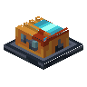

机器容量插件
Capacitor Addon
英文名: Capacitor Addon命名空间 ID:
oritech:machine_capacitor_addon类型: 方块所属模组: Oritech资料检索: 🔎 在 MC百科 搜索「机器容量插件」合成获得 (1)
有序合成Oritech


原始 JSON
{
"type": "minecraft:crafting_shaped",
"category": "misc",
"key": {
"b": {
"tag": "oritech:plating"
},
"c": {
"item": "oritech:magnetic_coil"
},
"f": {
"tag": "c:plates/plastic"
},
"s": {
"item": "oritech:energite_ingot"
}
},
"pattern": [
"fff",
"fcf",
"sbs"
],
"result": {
"count": 1,
"id": "oritech:machine_capacitor_addon"
}
}用于合成 (1)
有序合成Oritech
原始 JSON
{
"type": "minecraft:crafting_shaped",
"category": "misc",
"key": {
"a": {
"item": "oritech:machine_extender"
},
"b": {
"item": "oritech:machine_capacitor_addon"
}
},
"pattern": [
"ab "
],
"result": {
"count": 1,
"id": "oritech:capacitor_addon_extender"
}
}